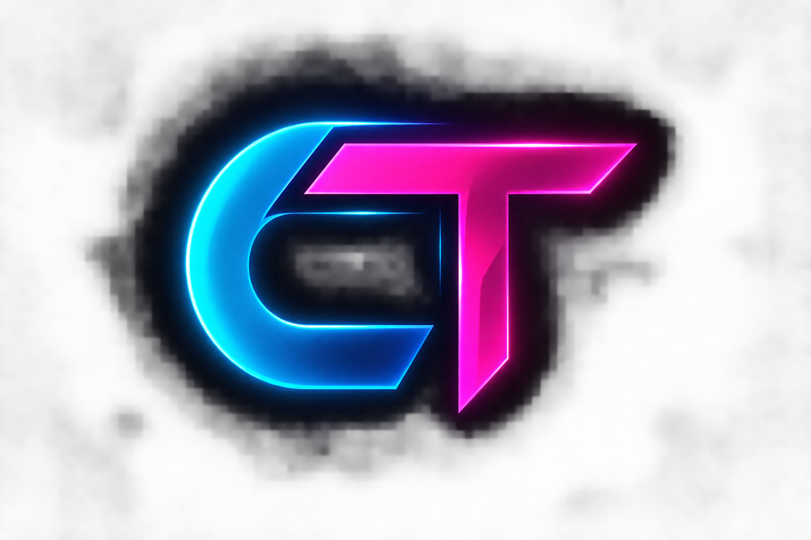

FEATURED PROJECTP — 01
job_copilot.py
candidate = resume
match = analyze(candidate)
return career_insights
AI Job Copilot
A career support app for resume analysis, job matching, and application tracking.

CHAYA THARUNSOFTWARE DEVELOPER Resume ↗I'm Chaya Tharun — a CSE graduate and aspiring software developer who enjoys turning complex problems into clear, useful experiences.
I like making technology feel useful, intuitive, and human.
My background is in Computer Science and Engineering. I enjoy building web applications, learning how systems fit together, and experimenting with AI and machine learning. I learn best by shipping projects, solving real problems, and improving the details that make software easier to use.
Good software is not just code that runs. It's a problem made simpler.
MY WORKING PRINCIPLEA practical toolkit that keeps growing with every project. I value solid fundamentals and the ability to learn what a problem needs.
A selection of things I've built to explore ideas, practice engineering, and make useful tools.
A career support app for resume analysis, job matching, and application tracking.
Track personal expenses and budgets with a simple finance dashboard.
An ML exploration of DNA-related disease prediction with an explainability-focused interface.
MORE EXPERIMENTS & CODE ON GITHUB ↗
G. Pulla Reddy Engineering College (Autonomous), Kurnool
Building foundations in software, systems, and computing.Sri Chaitanya Junior College, Vijayawada
T.K.R High School, Jammalamadugu
Completed secondary school education.I'm interested in opportunities to learn, contribute, and build software that makes a difference. If you have a role or project in mind, let's talk.
Start a conversation ↗